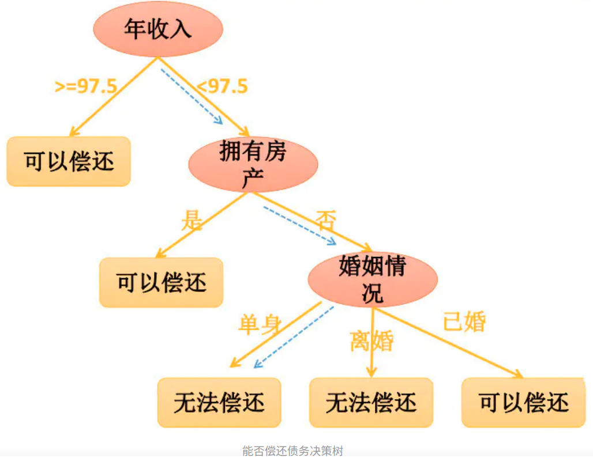
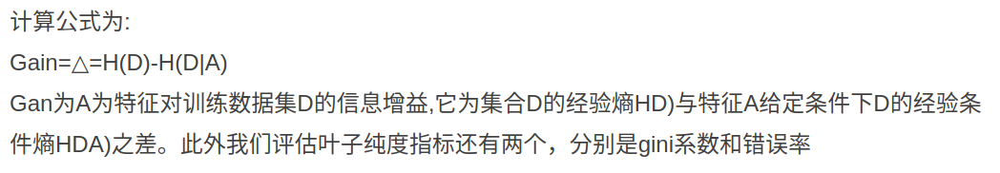
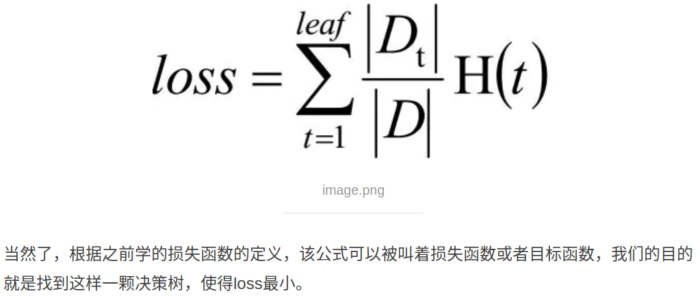

Concept
什么是提升(boost)算法呢？ 直观的理解便是梯度下降
机器学习要做的事情是找到目标函数，优化它，通过每次迭代都使目标函数值最小，
最优解就是目标函数最小化时侯对应的模型参数。
Summary
- (1) 決策樹是一個多功能的機器學習演算法，不僅可以進行分類亦可進行回歸任務。
- => 所以依然還是機器學習的一種
- (2) 可以配適複雜的資料集，是個強大的演算法。
- (3) 屬於無母數回歸方法(non-parametric)：對資料長相的要求不像回歸模型（有母數法，parametric）嚴格，不需要假設資料的線性關係與常態分佈。
- 適用於"母體分佈情況未知、小樣本”、母體分佈不為常態或不易轉換為常態，對資料長相的要求小。
- 無母數統計推論時所使用的樣本統計量分配通常與母體分配無關，不需要使用樣本統計量去推論母體中位數、適合度、獨立性、隨機性。
- => 所以可以不用設定參數
- (4) 決策樹演算法也是隨機森林演算法的基礎(隨機森林也是至今具潛力的演算法之一)。
- (5) 有諸多演算法，常見的包括CART, CHAID。
- (6) 決策樹可以用來建立非線性模型，通常被用在迴歸，也可以用在對於遞迴預測變數最二元分類。
Decision tree breifing and VS NN
和回归模型流程相反的模型—决策树，它是通过建立树模型之后，才得到的损失函数，并且成为衡量决策树模型的指标。
有时候数据特征众多且巨大，可以利用这种直观的树结构对数据特征进行切分，然后再构建模型
=> 所以可以先給定資料, 再透過資料產生模型**
=> 這個和一般NN不同,是相反的, NN是先設計模型, 再給資料收斂模型參數
决策树( Decision tree)是在已知各种情况发生概率的基础上,
通过构建决策树来进行分析的一种方式,是一种直观应用概率分析的一种图解法;
- (1) 决策树是一种预测模型,代表的是对象属性与对象值之间的映射关系;
- (2) 决策树是-种树形结构,其中每个内部节点表示—个属性的测试,
- (3) 每个分支表示一个测试输出,
- (4) 每个叶节点代表一种类别;
- (5) 决策树是一种非常常用的有监督的分类算法
- (6) 决策树算法是一种“贪心"算法策略,只考虑在当前数据特征情况下的最好分割方式,不能进行回溯操作。
- 对于整体的数据集而言,按照所有的特征属性进行划分操作,
- 对所有划分操作的结果集的“纯度”进行比较,选择“纯度”越高的特征属性作为当前需要分割的数据集进行分割操作,
- 持续迭代,直到得到最终结果。决策树是通过“纯度”来选择分割特征属性点的。
Example:

Decision tree construction
决策树算法的重点就是决策树的构造;决策树的构造就是进行属性选择度量,
确定各个特征属性之间的拓扑结构(树结构);构建决策树的关键步骤就是分裂属性,
分裂属性是指在某个卡点按照某一类特征属性的不同划分构建不同的分支,
其目标就是让各个分裂子集尽可能的纯(让一个分裂子类中待分类的项尽可能的属于同一个类别)：
注意：寻找“分裂属性”以及使得“叶子节点”更“纯”
构建步骤如下:
- (1) 将所有的特征看成一个一个的节点;
- (2) 遍历每个特征的每一种分割方式,找到最好的分割点;将数据划分为不同的子节点,eg:N1、N2、…、Nm计算划分之后所有子节点的纯度信息;
- (3) 对第二步产生的分割,选择出最优的特征以及最优的划分方式;得出最终的子节点:N1、N2.、……、Nm
- (4) 对子节点N1、N22Nm分别继续执行2-3步,直到每个最终的子节点都足够纯
Decision tree construction trick (+information gain)
问题一：前面算法思想里面提到了，决策树模型的关键是分割属性使得最终的叶子节点的纯度越“纯”，可是如何衡量叶子节点的纯度呢？
问题二：另外属性的分割是决策树算法的另一个要面对的重要问题，那么如何进行属性分割呢？
通过上面的问题我们给出**信息增益度(information gain)**的概念
结合信息熵的概念可以得知，信息熵越小，叶子节点中某一事件的概率越大
我们可以认为此叶子节点就越纯，所以信息熵可以是衡量叶子节点纯度的一个指标
=> 因為entropy越小,系統愈穩定,要用來表達的資訊量愈小
=> 所以子點的entropy要愈小愈好
当计算出各个特征属性的量化纯度值后使用信息增益度来选择岀当前数据集的分割特征属性;
如果信息增益度的值越大,表示在该特征属性上会损失的纯度越大那么该属性就越应该在决策树的上层

Decision tree construction stop
决策树构建的过程是一个递归的过程,所以必须给定停止条件,否则过程将不会迸行停止,一般情况有两种停止条件：
- (1) 当每个子节点只有一种类型的时候停止构建
- (2) 当前节点中记录数小于某个阈值,同时迭代次数达到给定值时,停止构建过程,此时使用max(P(i)作为节点的对应类型
- 方式一可能会使树的节点过多,导致过拟合 Overfiting)等问题;比较常用的方式是使用方式二作为停止条件
Decision tree measurement
和分类算法一样，可以采用通用的，准确率，召回率，F1等指标进行评估。
=> 可是和别的分类算法不同的是可以采用叶子节点的纯度来评估算法效果，叶子纯度值和越小，则分类的越清楚，算法越好
=> 所以就是判斷子node的準度
